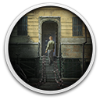

 INDUSTRIA
Details
 |
|
| Playtime | Not Played |
| Last Activity | Never |
| Added | 17/09/2024 0:12:49 |
| Modified | 18/05/2025 2:11:17 |
| Completion Status | Not Played |
| Library | Gog |
| Source | GOG |
| Platform | PC (Windows) |
| Release Date | 30/09/2021 |
| Community Score | 69 |
| Critic Score | 80 |
| User Score | |
| Genre | Adventure Indie Puzzle Shooter |
| Developer | Bleakmill |
| Publisher | Headup Games |
| Feature | Single Player |
| Links | Steam Official Twitch YouTube GOG Epic Discord Wikia |
| Tag | Action Amazon Luna Dystopian Female Protagonist First-Person FPS Horror Mystery Puzzle Robots Science Shooter Surreal |
Description
On the evening of the fall of the Berlin wall, a young woman plunges headlong into a parallel dimension to find her missing work colleague who has disappeared under mysterious circumstances. While the checkpoints in East Berlin are still being overrun by crowds of people, Nora escapes from this world, into unknown layers of time and into an unknown fate.

- Profound story: Experience a classic story-driven first-person shooter with about 4 hours of gameplay
- Tight atmosphere: Dive into a lovingly designed world full of mystery and lynchesque surreality
- Deadly danger: Enemies lurk around every corner - defend yourself with 4 different weapons
- Unique setting: Berlin at the time of the fall of the wall meets a surreal industrialized city
- Experimental soundtrack: Synthesizer, acoustic instruments and melancholic vocals

Berlin, 9th November 1989: The streets are full of people. After four decades of division, thousands of cars are rolling across the inner-German border. The Wall is finally open!
At the same time a man disappears in a secret research facility near East Berlin. His goodbye message reaches you too late. You drive back to the office, where the State Security has already destroyed all records of the research project. The complex is deserted and empty.
The search for Walter takes you deep into the center of the facility - right into the heart of the universe, where time seems to stand still. The dark secret lurks - well hidden - behind the curtain. In the end, it is horrible insights and the questions of responsibility that make you dive deeper and deeper into a strange, surreal yet familiar world.